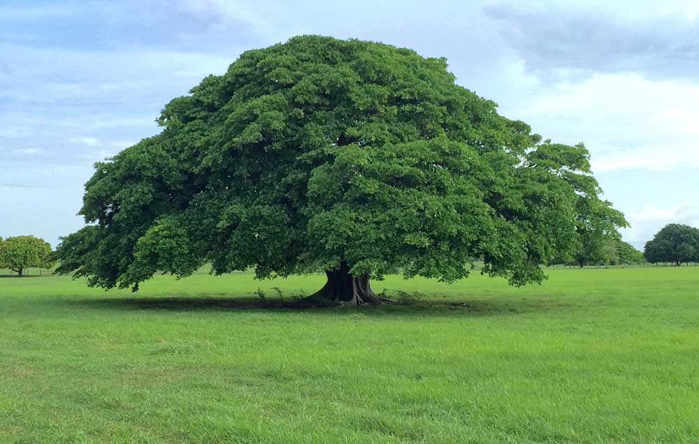
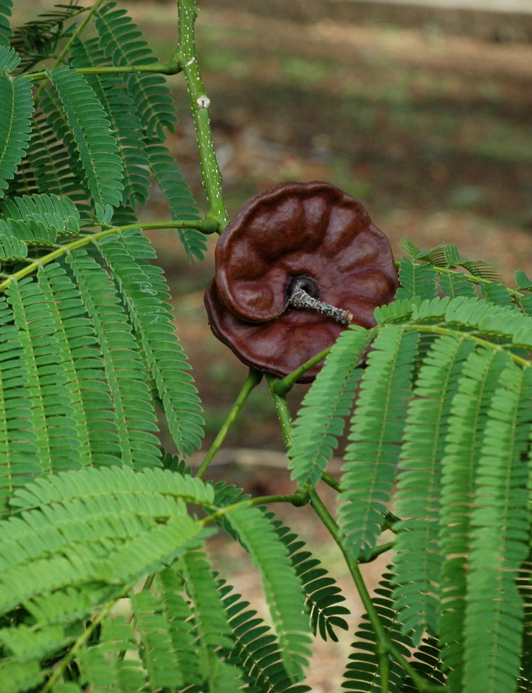

Guanacaste
Enterolobium cyclocarpum


Descripción
El Guanacaste es un árbol emblemático de Centroamérica, conocido por su copa amplia y extendida que proporciona sombra generosa. Es el árbol nacional de Costa Rica y muy apreciado en Nicaragua. Puede alcanzar hasta 40 metros de altura y su tronco puede medir más de 3 metros de diámetro.
Sus frutos tienen forma circular característica que se asemeja a una oreja, de ahí su nombre en inglés "Elephant Ear Tree".
Ubicación en Nicaragua
Se encuentra principalmente en zonas cálidas y húmedas de los departamentos de:
- Rivas
- Chontales
- Managua
- Carazo
Datos Curiosos
- Su copa puede extenderse hasta 50 metros de diámetro.
- Los frutos maduros son comestibles y dulces.
- Florece con pequeñas flores blancas muy aromáticas.
- El ganado consume sus frutos, ayudando a dispersar las semillas.
- Puede vivir más de 100 años.
- Una provincia de Costa Rica lleva su nombre.
Beneficios y Usos
- Sombra: Excelente árbol para pastizales y fincas ganaderas.
- Alimentación: Frutos consumidos por animales domésticos y silvestres.
- Madera: Utilizada en carpintería y construcción rural.
- Ecológica: Importante en sistemas agroforestales.
- Medicinal: La corteza se usa en medicina tradicional.
- Cultural: Símbolo de la identidad centroamericana.